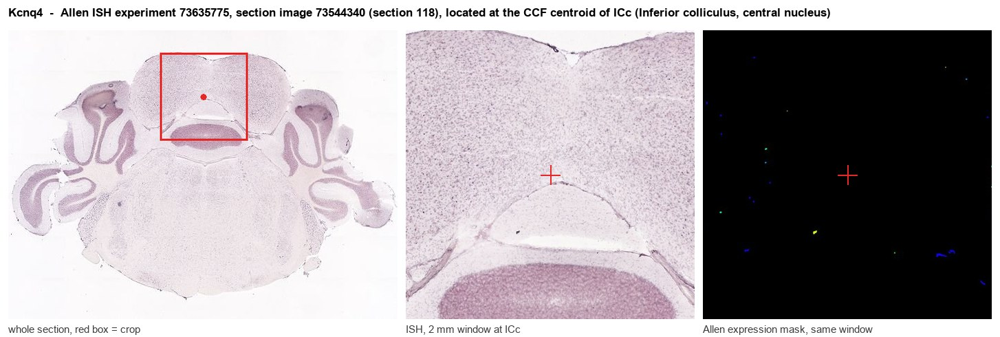
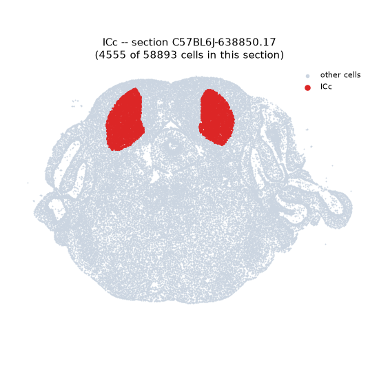
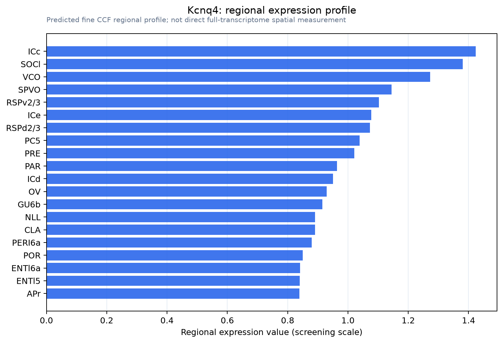

Kcnq4
Potassium voltage-gated channel subfamily KQT member 4 (KQT-like 4) (Potassium channel subunit alpha KvLQT4) (Voltage-gated potassium channel subunit Kv7.4)
Spatial tier: REGION_BIASED · Class: ION_CHANNEL · Top region: ICc (Inferior colliculus, central nucleus) · Positive regions: 39/554
Function in ICc: evidence, prediction, innovation
- Gene function
- KCNQ4 (Kv7.4) is a voltage-gated potassium channel subunit of the Kv7 family. Kv7 channels open near rest and carry the slowly activating, non-inactivating M-current, suppressed by Gq signalling that depletes PIP2. The M-current clamps resting potential, damps repetitive firing and sets spike-frequency adaptation; dominant-negative KCNQ4 mutations cause DFNA2 deafness.
- Region function
- The central nucleus of the inferior colliculus is the obligatory midbrain hub of the ascending auditory pathway, relaying tonotopic input from cochlear nucleus, superior olive and lateral lemniscus to the thalamus.
- Published in this region
- expression only Kharkovets et al. 2000 used specific antibodies to show KCNQ4 protein in neurons of the cochlear nuclei, nuclei of the lateral lemniscus and the inferior colliculus while absent from most other brain regions, the first ion channel called specific to a sensory pathway; Allen ISH confirms Kcnq4 in ICc (energy 0.56). No recording or manipulation of KCNQ4 within ICc neurons is published. Maamrah et al. 2023 found Kcnq4 knockouts have an exaggerated, poorly habituating acoustic startle.
- Predicted function
- Prediction: in ICc principal neurons KCNQ4 carries an M-current setting firing threshold and adaptation during sustained sound, suppressed by cholinergic tegmental input. Local knockout or XE991 block should make ICc neurons fire tonically with broadened rate-level functions, producing central hyperexcitability of the kind linked to tinnitus and hyperacusis, independently of cochlear damage.
- Innovation
- ★★★★☆ 4/5 KCNQ4 protein has been documented in the inferior colliculus for 25 years, yet never tested there directly.
- Tools
- Kcnq4 knockout and dominant-negative knock-in mice (Kharkovets 2006); anti-KCNQ4 antibodies; openers retigabine and ML213; blockers XE991 and linopirdine; AAV-shRNA or CRISPR for ICc knockdown.
- References
Direct evidence located at the region

Allen ISH experiment 73635775, section image 73544340 (section 118): the section that contains the CCF centroid of Inferior colliculus, central nucleus according to the Allen image-to-atlas alignment (reference_to_image), with a 2 mm window around that point. Left: whole section, red box = window. Middle: ISH signal. Right: Allen's expression-mask view of the same window. open this image in the Allen viewer
Direct spatial evidence

Regional expression figure

Predicted WMB × fine-CCF profile; not direct full-transcriptome spatial measurement.
Spatial profile
Evidence and specificity
- Evidence status
- PREDICTED_FINE
- Direct sources
- None; predicted localization only
- Exclusive threshold
- 12 positive regions out of 554
- Spatial specificity
- 0.293
- Top-region fraction
- 0.046
- Filter status
- PASS
Interpretation limits
- Cell-type-to-region projection is imputed expression, not direct spatial measurement.
- Adult reference atlases do not establish stability across age, sex, strain, state, or disease.
- Transcript abundance does not guarantee protein abundance or genetic-tool performance.